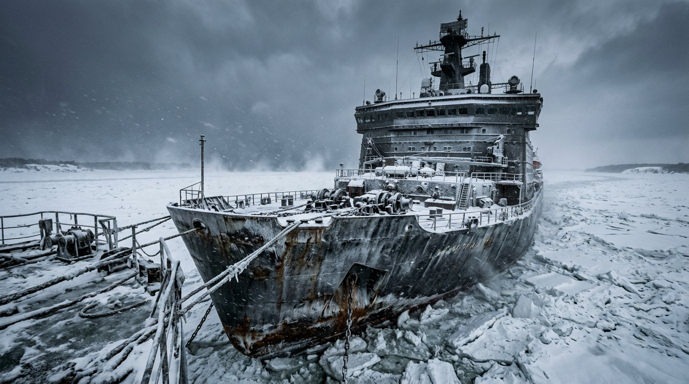

B–14 / PROFIL DE BOSS Boss de groupe · Black Division
The Wedge : repères et niveau de preuve
BSG a annoncé le 12 novembre une baisse de réaction, précision et santé de The Wedge et de ses gardes, ainsi que des munitions modifiées. Aucun nouveau nombre, type de munition ou exploit de fumée n’est confirmé officiellement.
Fiche communautaire · points à vérifier en raid
- Groupe
- Boss de groupe · Black Division
- Faction
- Black Division · wiki communautaire
- Gardes rapportés
- 3–6 gardes selon la taille du groupe dans la wiki; BSG a annoncé leur affaiblissement sans préciser ce nombre.
- Équipement rapporté
- Le dossier wiki associe le boss à un porte-plaques LV-119 pour une tâche; cette pièce n’est pas promise comme butin garanti.
- Rôle décrit
- Boss Black Division présenté avec des gardes. Le hotfix du 12 novembre est le fait officiel le plus récent retenu ici.
Notes par mode
Ne pas transposer les taux
BSG (12/11) : Wedge et gardes affaiblis dans tous les modes; munitions modifiées sans nom. La wiki affiche une table HP communautaire, non testée en client.
Notes communautaires / officielles séparées par mode :
PvP permanent
BSG (12/11) : Wedge et gardes affaiblis dans tous les modes; munitions modifiées sans nom. La wiki affiche une table HP communautaire, non testée en client.
PvE Zone
Même annonce BSG multi-mode; aucun détail de taux ou de munition pour PvE. La page d’API ne prouve pas la présence au raid.
PvP Seasonal
BSG précise aussi des changements Seasonal de progression et d’équipement sur les lieux concernés, sans détailler un taux propre au Wedge.
Lieux rapportés
Repères de sources communautaires, pas des points de spawn garantis.
La wiki le situe au niveau 3, dans le gym; le lieu précis et les conditions de raid restent des repères communautaires.
PRUDENCE Pas une route garantie
Repères avant l’engagement
Conseils généraux de couverture et de vérification, pas un script d’IA testé.
- Préparez les angles et un repli; la baisse annoncée par BSG ne transforme pas l’affrontement en méthode garantie.
- Une vidéo du 12 novembre avance une hypothèse de comportement de vision lié à la fumée, mais rapporte des échecs de reproduction. Ne faites pas de ce comportement un plan de raid.
- Les retours Reddit d’octobre précèdent l’équilibrage BSG du 12 novembre et sont contradictoires; ils ne constituent pas une procédure post-patch.
Progression / quête
Vérifier les tâches associées
Les tâches éventuelles sont à contrôler dans le client. Ouvrir la section des tâches de la source communautaire

WIKI / VALEUR RAPPORTÉE Pas un relevé client
Santé communautaire rapportée
Relevé de la wiki communautaire consultée le 18 novembre. BSG a annoncé une baisse de santé le 12 novembre sans publier le nouveau total : 750 HP est donc un repère historique incertain, pas une valeur actuelle confirmée.
Total indiqué dans la source communautaire
750 HPCette valeur n’est pas présentée comme un total actuel certifié par BSG.
BSG / NOTE DATÉE Fait limité au message
Changements officiellement annoncés
Battlestate Games — équilibrage du 12 novembre (canal officiel X)
Dans sa note d’équilibrage du 12 novembre, BSG annonce pour tous les modes une baisse de la réaction, de la précision et de la santé de The Wedge et de ses gardes, ainsi que des munitions modifiées. La note ne publie ni le nouveau total HP, ni le type de munition; les anecdotes sur la fumée ne sont pas confirmées par BSG.
Une annonce technique n’indique pas que le boss sera présent dans votre raid ni que ses autres caractéristiques sont inchangées.
B–14 Références
Sources et limites
Données Tarkov.dev, pages communautaires et annonces BSG séparées. Relevé le 18 novembre 2026; aucun test de protection en client ni aucun raid en direct n’a été réalisé pour cette phase.
- Wiki communautaireEFT Wiki — The Wedge (nouvel onglet)
Profil communautaire consulté le 18/11/2026. Le total HP affiché par la wiki n’est pas traité comme actuel car BSG a annoncé une baisse de santé le 12/11 sans publier le nouveau total.
- Wiki communautaireEscape from Tarkov Wiki (communautaire) — Icebreaker (nouvel onglet)
Wiki communautaire consultée le 18/11/2026 : extraction Helicopter (signal vert et coût rapporté), déverrouillage direct et progression. Les notes BSG priment pour les faits 1.0.5.0/1.1.5.0 ; disponibilité et prix live non testés.
- Annonce officielle BSGBattlestate Games — équilibrage du 12 novembre (canal officiel X) (nouvel onglet)
Message officiel BSG du 12/11/2026, sans numéro de patch : tâches Seasonal simplifiées et prérequis de départ assouplis ; Black Division à 100 % sur les lieux concernés en Seasonal seulement, avec réaction/précision/santé réduites ; davantage de kits Sudak-Tudak et de documents Battle Pass sur Icebreaker en Seasonal. Le plafond journalier de documents augmente en PvP et PvP Season (sans valeurs données). Tous modes : Wedge et gardes affaiblis et munitions modifiées, cartouches non nommées ; documents médicaux Battle Pass désormais possibles sur Icebreaker. BSG invite à finir Kord Breach pour débloquer des offres d’équipement uniques permanentes dans tous les modes. Aucun taux par carte, nombre exact ou test client n’est fourni.
- Vidéo communautaireYouTube — Millennial ManCave, tactique fumée/Wedge du 12 novembre (nouvel onglet)
Vidéo du 12/11/2026 (10:31), transcript consulté. L’auteur affirme qu’un comportement de vision lié aux buissons/fumigènes pourrait gêner le tir de l’IA en tirant à intervalles, mais précise qu’il ne parvient pas à reproduire certains combats (chaufferie/héliports) et renvoie à un autre créateur. Hypothèse de bug/interaction exploitable, non confirmée par BSG et non testée en client; ne pas en faire une technique fiable ni une recommandation.
- Retour communautairer/EscapefromTarkov — retours joueurs sur la progression contre Wedge (nouvel onglet)
Discussion datée du 14/10/2026, avant l’équilibrage BSG du 12/11. Les commentaires proposent des fumigènes, grenades et angles, avec résultats et opinions contradictoires; un joueur rapporte une réussite partielle, d’autres jugent la rencontre très difficile. Page Reddit non relue intégralement; ces conseils ne décrivent pas l’état post-12/11 et ne sont pas une procédure garantie.
À lire ensuite
Index des boss
Revenir à la comparaison par lieu et par mode.